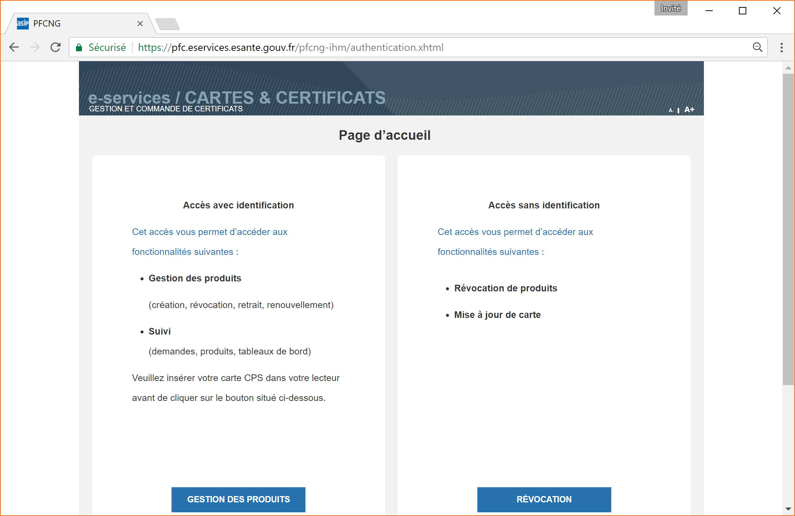
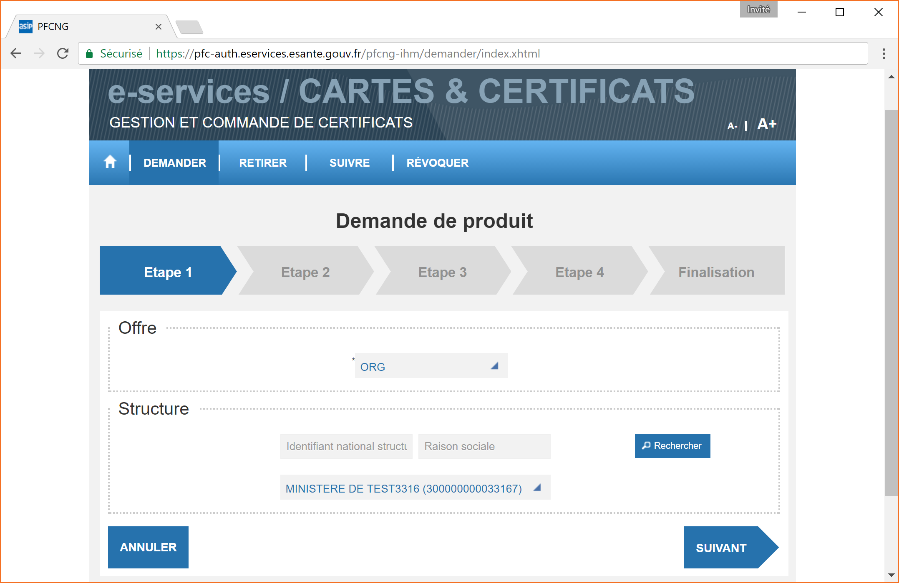
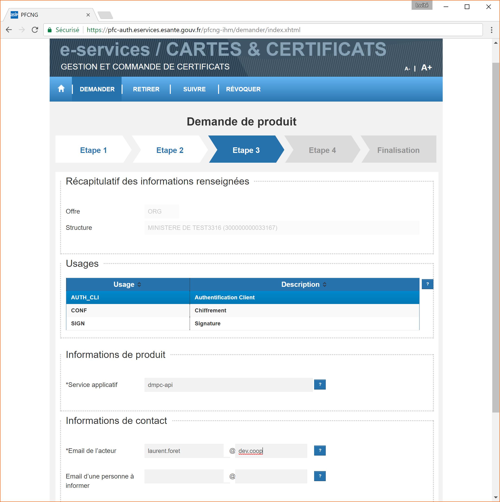
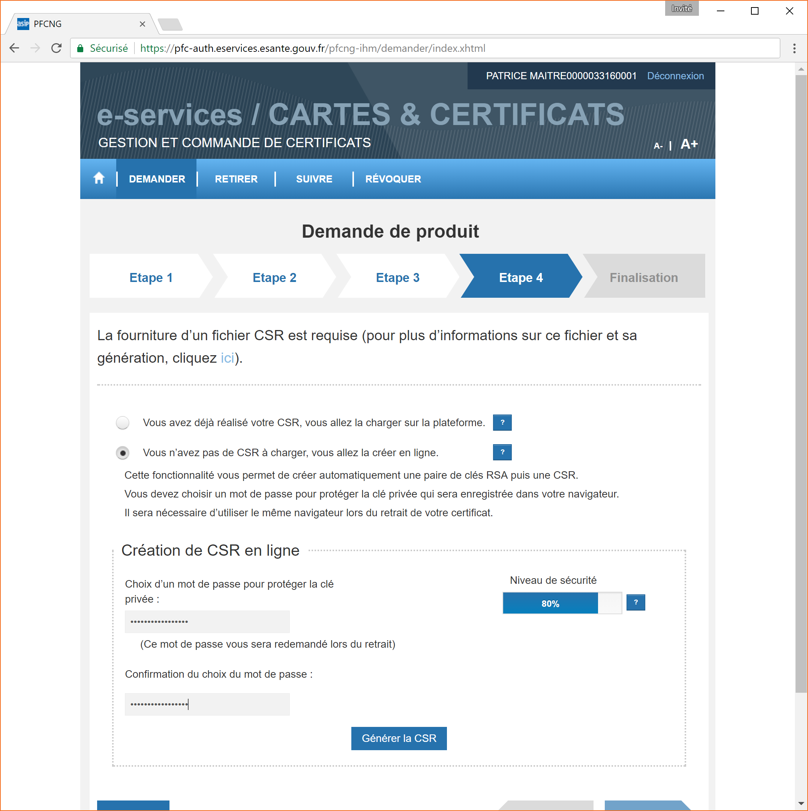
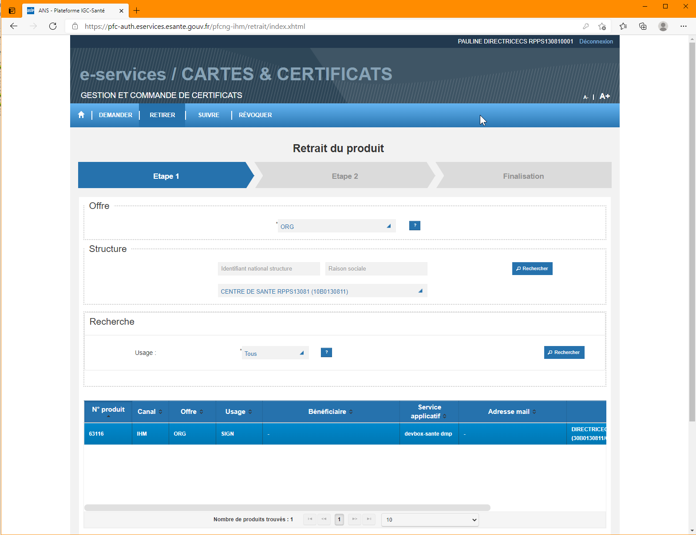
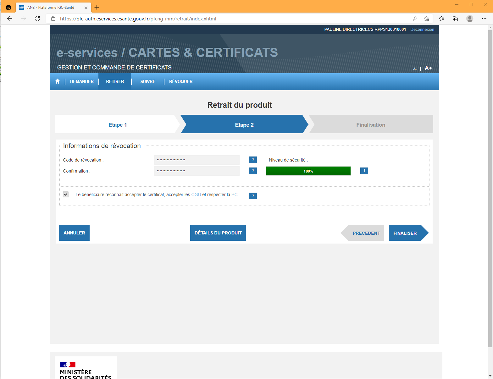
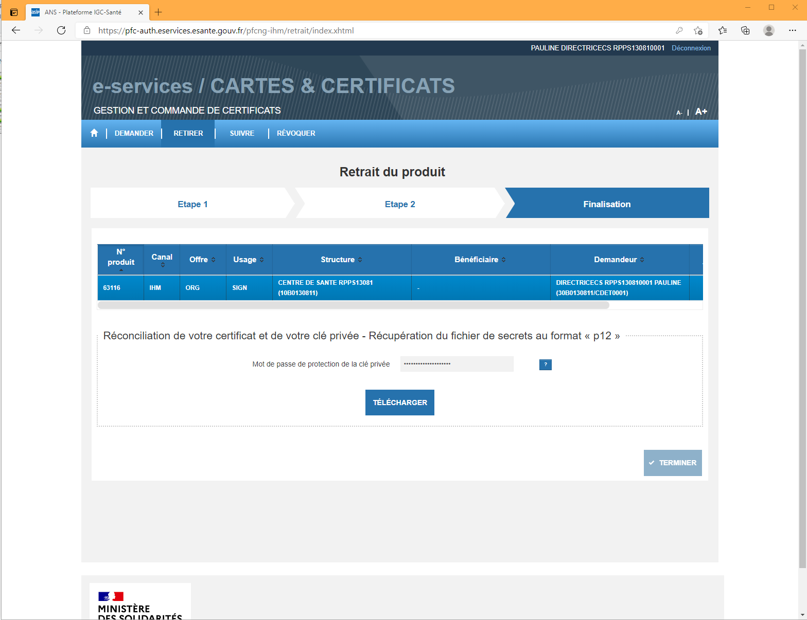
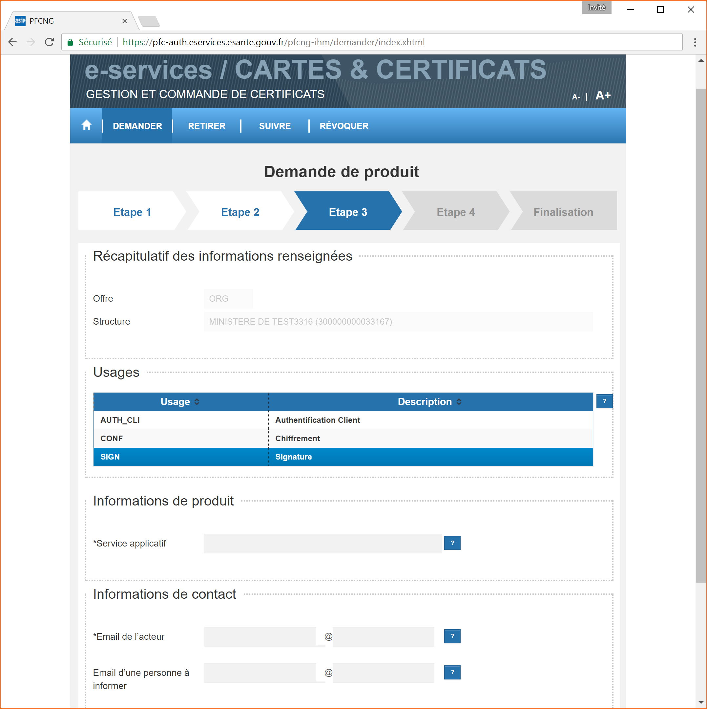

Gestion des certificats
Une nouvelle IGC Santé a été mise en place courant 2016 : http://integrateurs-cps.asipsante.fr/IGC-Sante
Afin d’utiliser le connecteur DevBox-Santé DMP en mode authentification indirecte, il vous faut obtenir des certificats serveurs provenant de cette autorité. Pour celà après avoir commandé des cartes CPS vous pouvez faire une demande à partir d’un téléservice dont la procédure est décrite ici.
Procédure Administrative
Règle générale
Pour obtenir, les certificats et clés nécessaires pour la connexion au DMP en authentification indirecte, il faut que votre établissement soit enregistré au FINESS (Fichier National des Établissements Sanitaires es Sociaux) : http://finess.sante.gouv.fr/fininter/jsp/index.jsp
Les personnes pouvant remplir les conditions d’obtentions des certificats sont décrites dans le document de l’ANS : Procédure DMP - Structures salariées
Les principes généraux sont les suivants :
Lors du raccordement au DMP, chaque site géographique d’un établissement de santé s’authentifie et s’identifie via son numéro de FINESS géographique.
- Ainsi, chaque site doit générer des certificats d’organisation sur son numéro de FINESS géographique.
- L’administrateur technique est une personne de confiance à qui le représentant légal de l’établissement délègue le droit de gérer le cycle de vie des certificats logiciels commandés.
Il est également possible pour le représentant légal d’une structure de désigner un ou plusieurs mandataires pour sa structure.
Quels certificats ?
Pour accéder au DMP en authentification indirecte (création/gestion administrative et alimentation), vous avez besoin de déployer les certificats suivants :
- un certificat client de type ORG AUTH_CLI pour s’authentifier au DMP ;
- un certificat client de type ORG SIGN pour signer les lots de documents soumis au DMP
L’dministrateur technique doit commander les certificats via le formulaire n°413 et le retourner à monserviceclient.certificats@asipsante.fr Le formulaire peut être télécharger depuis le site : https://esante.gouv.fr/securite/cartes-et-certificats/commandes
Procédure Technique
Il est possible de commander ces certificats sur le site web mis à disposition par l’ANS. Il s’agit d’un service permettant la commande de certificats et cartes :
https://pfc.eservices.esante.gouv.fr
Pour pouvoir y accéder il faut se connecter avec un lecteur de cartes CPS configuré et une carte CPA autorisée au préalable :

Certificats et clés d’authentification
Demander
Étape 1:

Étape 2:
RAS, il s’agit d’un écran de recherche pour les demandes antérieures. Cliquer sur “Demander un nouveau produit”
Étape 3:
Il faut renseigner :
- l’usage : AUTH_CLI
- le nom du service (nom du logiciel) qui va accéder au DMP,
- son adresse email (utiliser plus tard pour envoyer une confirmation)

Étape 4 :
Pour cette étape le plus simple est de générer la CSR sur le site, mais pas obligatoire.
- Saisir un mot de passe assez fort pour convenir au service, et sauvegarder le car il sera demandé lors de la récupération du certificats P12, ainsi que pour configurer la DevBox-Santé DMP.
- Cliquer sur “Générer la CSR”, puis “Finaliser”

Étape 5 :
Vous recevez un email de confirmation de la demande à l’email saisie à l’étape 3 :
Retirer
Depuis l’étape 5 de la demande vous pouvez accéder au retrait du certificat commandé. Sinon vous pouvez y accéder par le menu Retirer
Étape 1:
Cette étape consiste à choisir le produit à retirer

Étape 2:
Dans cette étape, il faut saisir un nouveau mot de passe pour les révocations (identique ou pas de celui de la CSR). Il n’est pas utilisé dans l’API mais peut servir à l’administrateur technique.

Étape 3: Finalisation
Dans cette étape, il faut saisir le mot de passe de réconciliation celui qui a permis de générer la CSR.

Le certificat/clé (p12) a un nom qui doit ressembler à asip-p12-EL-TEST-ORG-AUTH_CLI-20170603-173116.p12
Certificats et clés de signature
Pour la signature, il faut faire une autre demande avec le même process, à l’exception de l’étape 3 ou il faudra demander un certificat de signature : Usage SIGN

Configuration de la DevBox-Santé DMP
Le paramètrage de ces certificats pour la DevBox-Santé DMP se trouve dans le application.yml
dmpc.url.prefixdmpc.smime.p12.pathdmpc.smime.p12.passworddmpc.ssl.p12.pathdmpc.ssl.p12.passworddmpc.ssl.trust.path
Exemple de configuration à fournir :
dmpc:
# informations relatives au certificat smime
smime:
p12:
path:
#./smime.p12
A_renseigner
password:
A_renseigner
# informations relatives au certificat ssl
ssl:
p12:
path:
#ssl.p12
A_renseigner
password:
A_renseigner
# Contient les certificats serveurs autorisés pour authentification mutuelle
trust:
path:
truststoreIgcSante-EL-ORG.jks